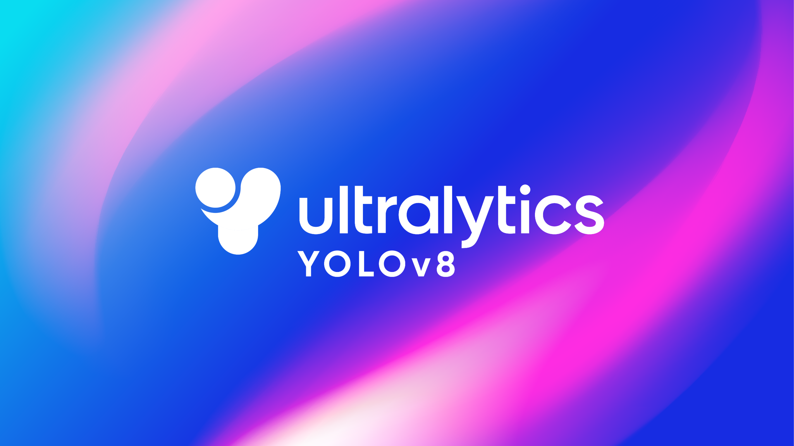
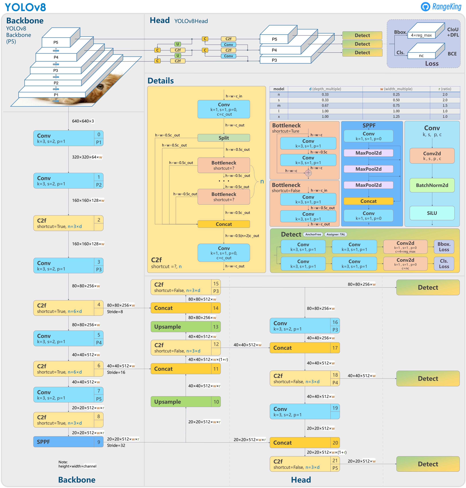

모델 소개

YOLO(You Only Look Once)는 물체 검출(Object Detection)에 관심 있는 분들이라면 한번쯤 들어 봤을 딥러닝 모델입니다.
물체 검출(Object Detection)이란 이미지 내에 존재하는 물체를 찾고, 찾은 물체를 구분하는 기술입니다. 입력받은 이미지에서 물체가 있는 영역의 위치를 Bounding Box로 표시하고 Bounding Box 내에 존재하는 물체를 레이블(Lable)로 분류합니다. 즉, 이미지 내 물체의 위치와 물체의 종류를 함께 찾는 기술입니다. 이를 통해 이미지 인식, 로봇, 자율 주행 자동차, 인공지능 인터렉션 등 다양한 분야에서 사용될 수 있습니다.
YOLO(You Only Look Once) 모델은 말그대로 이미지를 한번만 보고 바로 물체를 검출하다는 뜻으로, 딥러닝 기술을 이용한 물체 검출 모델입니다. 2015년도에 처음으로 Joseph Redmon이라는 연구자에 의해 제안되었고, 지금까지 많은 개발자들에 의해 꾸준히 발전되어 v8까지 출시되었습니다. YOLO 모델이 나오기 전에 등장했던 딥러닝 모델들은 이미지를 여러번에 걸쳐서 확인하며 동작했기 때문에 상대적으로 한장의 이미지를 처리하는데 많은 시간을 소요했습니다. 따라서 실시간 물체 검출이 필요한 경우에는 해당 모델들을 사용하기가 어려웠습니다. 하지만 YOLO 모델은 이미지를 한 번만 보고 바로 물체 검출을 수행할 수 있기 때문에 준수한 정확도를 유지하며 작업 속도가 빠릅니다. 이는 동영상 객체 탐지처럼 물체 검출을 실시간으로 수행해야 하는 경우, 속도가 느린 다른 모델에 비해 큰 이점이 됩니다.
따라서, 이러한 장점이 '교통 법규 위반 탐지 프로젝트 멈춰'에 가장 적합하다고 생각하여 YOLO 모델을 선택했습니다.
YOLO 버전별 차이점 비교
YOLOv1 (2016): 실시간 객체 검출을 위한 딥러닝 기반의 네트워크입니다.
YOLOv2 (2017): v1 대비 성능 및 속도가 향상되었습니다.
YOLOv3 (2018): Backbone 네트워크 구조를 Darknet-19에서 Darknet-53으로 변경하고 학습 방법을 개선하여 v2보다 Object Detection 속도는 약간 느려졌지만 성능이 대폭 개선되었습니다.
YOLOv4 (2020.04): v3에 SPP와 PAN 기술을 적용하여 Object Detection 정확도와 속도 개선이 이루어졌습니다.
YOLOv5 (2020.06): CNN layer의 연산 활용을 업그레이드 하여 정확도가 10% 이상 향상되었으며, backbone을 depth multiple과 width multiple을 기준으로 하여 크기별로 s, m, l, x 모델로 나누었습니다. s는 가장 빠르지만 정확도가 떨어지고, x는 가장 느리지만 정확도는 향상되었습니다.
YOLOv7 (2022.07): 훈련 과정을 최적화하고, Trainable bag-of-freebies 제안했습니다.
YOLOv6 (2022.09): 특이하게 v7보다 늦게 출시되었습니다., 알고리즘 향상, 시스템 탑재를 위한 Quantization과 Distillation 방식이 도입되었습니다.
YOLOv8 (2023.01): Ultralytics의 YOLO 최신 버전으로, 새로운 저장소를 출시하여 객체 감지, 인스턴스 세분화 및 이미지 분류 모델 Train을 위한 통합 프레임워크를 구축했습니다.
YOLOv8 구조

YOLOv5와 달라진 점 5가지
1. C3 module 에서 C2f module로 변경되었습니다.
2. backbone의 6x6 convolution layer가 3x3 convolution layer로 변경되었습니다.
3. YOLOv5에 존재하던 2개의 convolution layer 2개를 제거했습니다.
4. Bottleneck에 있는 1x1 convolution layer가 3x3 convolution layer로 변경되었습니다.
5. objectness branch를 제거하고, decoupled head를 사용했습니다.
출처
https://brunch.co.kr/@aischool/11
https://velog.io/@qtly_u/n4ptcz54
https://www.thedatahunt.com/trend-insight/guide-for-yolo-object-detection